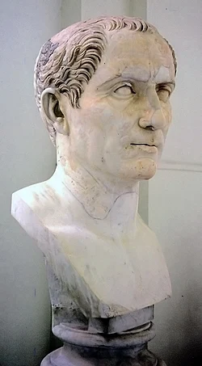
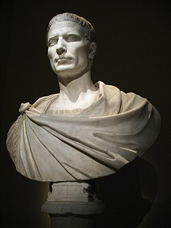
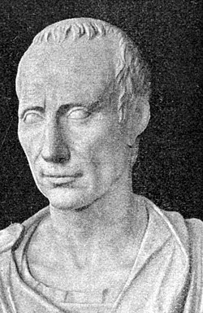
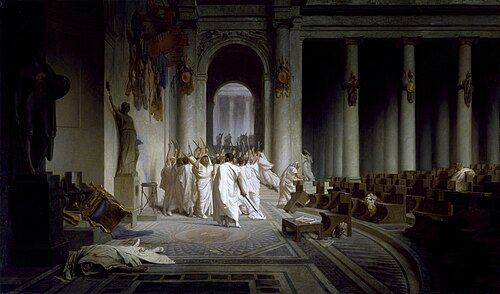
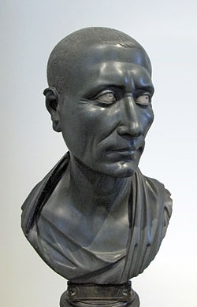

Julius Caesar
Jül Sezar (Latince: Gaius Iulius Caesar, Latince
telaffuz:
[ˈɡajjʊs ˈjuːlɪ.ʊs ˈkae̯sar]; MÖ 12 Temmuz 100 - MÖ 15
Mart 44), Romalı asker ve Roma Cumhuriyeti'nin son
diktatörü
olan politik liderdir. Aynı zamanda iyi bir hatip ve
güçlü
bir yazar olan Sezar, dünya tarihinin en etkili
insanlarından birisi olarak kabul edilir. Eylemleriyle
Roma
Cumhuriyeti'nin Roma İmparatorluğu'na dönüşmesinde ve
evlatlığı Augustus'un ilk Roma imparatoru olmasını
sağlayacak olayların başlamasında kritik bir rol
oynamıştır
Roma Senatosundaki optimates kliğine mensup muhalifleri
Marcus Porcius Cato ve Marcus Calpurnius Bibulus'a
karşı, populares kliğine mensup bir politikacı
kimliğiyle, Marcus Licinius Crassus ve Gnaeus Pompeius
Magnus'la birlikte gayri resmi olarak Roma politik
yaşamına birkaç yıllığına yön verecek olan birinci üçlü
yönetimi kurdu. Galya'yı fethederek Roma topraklarını
Atlas Okyanusu'na kadar genişletti ve aynı zamanda MÖ 55
yılında Britanya'nın Romalılarca ilk işgalini
gerçekleştirdi. Triumvirliğin yıkılmasıyla birlikte
Pompey ve Senato ile arası açıldı. MÖ 49 yılında
Lejyonlarının başında Rubicon nehrini geçmesiyle
başlayan iç savaş sonucu Roma dünyasının tartışmasız
hâkimi haline geldi.
Hükûmetin kontrolünü ele almasının ardından, Roma toplumu
ve yönetimini kapsayan geniş bir reform hamlesi
başlattı. Hayat boyu diktatör (dictator perpetuus) ilan
edildi ve Cumhuriyet bürokrasisini merkezîleştirdi.
Ancak Sezar'ın eski arkadaşlarından Marcus Junius
Brutus'un önderliğindeki, Cumhuriyeti eski işleyişine
kavuşturmayı hayal eden bir grup senatör tarafından MÖ
15 Mart 44 tarihinde öldürüldü. Suikastın ardından
başlayan yeni bir iç savaş, vârisi Gaius Octavianus'un
Roma dünyası üzerinde baskın bir otokratik güç haline
gelmesine yol açtı. Sezar, suikastten iki yıl sonra, MÖ
42 yılında Senato tarafından resmen kutsanarak Roma
tanrılarından biri ilan edildi. Ayrıca vasiyetiyle
birlikte ölümünden sonra servetinin bir kısmını Roma
halkına dağıttırdı ve her Roma vatandaşına 300.000
sestertius bıraktı.
Sezar'ın hayatı hakkındaki bilgilerin çoğu veya fazlası,
askerî seferlerini anlattığı, kendisi tarafından
yazılmış olan "Yorumlar" (Commentarii) adlı
hatıralarından ve Cicero gibi politik rakiplerinin
mektup ve söylevlerinden, Sallustius'un tarihsel
yazılarından ve Catullus'un şiirleri gibi çağdaşı
kaynaklardan elde edilmiştir. Hayatına dair pek çok
ayrıntılı bilgi sonraki yüzyıllarda yaşamış olan Appian,
Suetonius, Plutarkhos, Cassius Dio ve Strabon gibi
tarihçiler tarafından aktarılmıştır.
Hayatı
İlk Yılları
Sezar, soylarının tanrıça Venüs'ün sözde oğlu Troyalı
prens Aeneas'ın oğlu Iulus'tan geldiğini iddia eden ve
patrici sınıfından bir aile olan Julia gens'ine
mensuptur.
Sezar" cognomen'i, Yaşlı Plinius'a göre sezaryenle doğmuş
bir atasından gelir (Latince "kesmek" anlamına gelen
caedo, caedere, cecidi, caesum fiilinden türemiştir).
Historia Augusta'nın bu konu hakkındaki diğer üç iddiası
ise sırasıyla şöyledir: İlki Sezar'ın saçının çok sık
olması (Latince caesaries); diğeri gözlerinin parlak gri
olması (Latince oculis caesiis); ya da savaşta bir fil
öldürmüş olması (mağribi dilinde caesai) nedeniyle bu
unvanı almıştır. Sezar'ın bastırdığı sikkeler üzerinde
fil bulunması adı geçen son iddiayı destekler
niteliktedir.

Jül Sezar büstü
Antik şecerelerine rağmen Julii Caesare'ler politik
olarak etkili bir aile değildi ve mensuplarından sadece
üçü konsül seçilebilmişti. Sezar'ın aynı adı taşıyan
babası Cumhuriyetin seçimle iş başına gelen üst düzey
magistraları arasında ikinci sırada yer alan praetorluk
makamına kadar yükselme başarısı göstermiş, belki de
ünlü kayınbiraderi Gaius Marius sayesinde Asya eyaleti
valiliği yapmıştır. Annesi Aurelia Cotta birkaç
konsül çıkarmış etkili bir aileden geliyordu. Sezar'ın
vasisi olarak iyi bir hatip ve dil bilimci olan Galya
kökenli Marcus Antonius Gnipho'nun atandığı bilinir.
Sezar'ın her ikisinin de adı Julia olan iki kız kardeşi
vardı. Sezar'ın çocukluğu ile ilgili kayıtlar çok azdır.
Suetonius ve Plutarkhos'un biyografilerinde Sezar'ın
hikâyesi birdenbire gençliğinden başlar ve her iki
eserde de açılış paragrafları kayıptır.
Sezar'ın gelişim yıllarına tam bir kargaşa hâkimdi.
Roma'nın müttefiklerine verilen Roma Yurttaşlığı
hakkının geri alınmasının neden olduğu kargaşa, Roma ve
İtalyan müttefikleri arasında Sosyal Savaş olarak
adlandırılan bir savaşa neden olurken Pontuslu VI.
Mithridates Roma'nın doğu eyaletlerini tehdit eder hale
gelmişti. Roma siyaseti ana olarak iki hizip olarak
bölünmüş, optimates adındaki birinci hizip Senato
içerisinde aristokratik yönetimi savunurken, populares
hizbi doğrudan seçimleri tercih etmekteydi. Sezar'ın
amcası Marius, popularis hizbine mensupken rakibi Lucius
Cornelius Sulla bir optimas idi. Hem Marius hem de Sulla
Sosyal Savaş sırasında sivrilmişler, her ikisinin de
Mithridates'e karşı yapılan seferi komuta etmek
istemesine rağmen şans başlangıçta Sulla'ya gülmüştü.
Ancak Sulla ordunun komutasını ele almak için şehir
dışına çıktığında bir tribün tarafından geçirilen yasa
ile komuta Marius'a tevdi edildi. Sulla'nın tepkisi
ordusuyla Roma'ya dönmek ve komutanlığını ilan ederek
Marius'u sürgüne göndermeyi denemek oldu ancak o sefere
çıktığında Marius çoktan geçici bir ordunun başına
geçmişti. Marius ve müttefiki Lucius Cornelius Cinna
şehri ele geçirdi, Sulla "halk düşmanı" ilan edildi ve
Marius'un birliklerinin Sulla'nın destekçilerinden
intikamı kanlı oldu. Marius MÖ 86 yılının başlarında
öldü ancak hizip etkin bir güç olarak kaldı.
MÖ 85 yılında, Sezar'ın babası bir sabah ayakkabılarını
giyerken görünürde herhangi bir neden olmaksızın aniden
ölünce henüz on altı yaşında olan Sezar ailenin
başına geçti. Ertesi yıl Marius'un tasfiyesi sırasında
ölen eski Jüpiter yüksek rahibi Merula'nın yerine yeni
Flamen Dialis olarak atandı. Ardından bu göreve
seçilen kişilerin patrici olması zorunluluğuna ilaveten
bu kişinin bir patrici ile evli olması gerektiği
şeklindeki geleneği, çocukluğundan beri nişanlı olduğu
varsıl bir Equestrian aileden gelen Cossutia adındaki
kızdan ayrılarak Cinna'nın kızı Cornelia ile evlenmek
suretiyle yıktı.
Mithridates ile barış yapan Sulla artık geri dönerek
Marius'un destekçilerine karşı iç savaşa devam
edebilirdi. Tüm İtalya boyunca süren çarpışmaların
ardından MÖ 82 Kasım'ında yapılan Colline Geçidi
Savaşını kazanarak Roma'yı ele geçirdi ve kendisini
diktatör olarak atadı; her ne kadar bu makama atanan
kişi geleneksel olarak sadece altı ay görev yapabilse de
Sulla için bir limit belirlenmemişti. Marius'un
heykelleri yıkıldı ve mezarı açılarak cesedi Tiber
nehri'ne atıldı. Diğer rakibi Cinna ise askerlerinin
isyanı sonucu zaten öldürülmüştü. Sulla'nın
yasaklamalarının ardından politik düşmanlarının
yüzlercesi öldürüldü ya da sürgüne gönderildi. Sezar,
Marius'un yeğeni ve Cinna'nın damadı olarak artık
hedefteydi. Önce amcasının kalan mirasından, ardından
karısının çeyizinden ve son olarak rahiplik görevinden
mahrum bırakıldı ancak karısından boşanmayı reddedince
saklanmak için kaçmak zorunda kaldı. Kendisine yönelen
tehditlerden, aralarında Sulla'nın destekçilerinin ve
Vesta bakirelerinin de bulunduğu aile üyelerinin
arabuluculuğu sayesinde, Sulla'nın isteksizce de olsa
geri adım atmasıyla kurtulabildi. Sulla'nın
"Sezar'da çok sayıda Marius gördüğünü" söylediği iddia
edilir.
Erken dönem kariyeri
Sezar Roma'ya dönmek yerine orduya katıldı ve Asya'da
Marcus Minucius Thermus ve Kilikya'da Servilius
Sauricus'un emrinde görev yaptı. Midilli kuşatmasında
gösterdiği üstün hizmetlerinden dolayı Corona Civica ile
ödüllendirildi. Kral IV. Nikomedes'in donanmasına eşlik
ederek güvenliğini sağlamak için gittiği Bithynia'da
Kralın sarayında uzun süre kalınca tüm hayatı boyunca
peşini bırakmayacak olan Nikomedes'le bir ilişki
yaşadığı söylentileri ortaya çıktı.Rahiplik görevinden
alınması ironik biçimde ona askerî bir kariyer yapmanın
yolunu açmıştı; çünkü geleneklere göre bir Flamen
Dialis'in atlara dokunması, kendi yatağından başka bir
yatakta üç günden fazla ya da Roma dışında bir günden
fazla uyuması ya da bir orduya doğru bakması
yasaktı.
İki yıl diktatör olarak görev yapan Sulla MÖ 80 yılında
istifa etti ve yeniden konsülar bir hükûmet kurup bir
yıl konsül olarak görev yaptıktan sonra emekliye
ayrıldı. Sezar sonradan Sulla'nın diktatörlük
görevinden ayrılmasıyla alay edecek ve
"Sulla politikanın abecesini bilmiyor" diyecekti.
Sulla iki yıl sonra MÖ 78'de öldü ve cenazesi devlet
töreniyle kaldırıldı.Sulla'nın öldüğünü duyan
Sezar, kendisi için yeterince güvenli hale geldiğine
inandığı Roma'ya geri döndü. Tüm mallarına el
konulduğundan, Roma'nın dışında alt sınıftan insanların
yaşadığı Subura'da mütevazı bir eve yerleşti.
Sezar'ın geri dönüşü Marcus Aemilius Lepidus tarafından
Sulla karşıtı bir darbe girişimi olarak değerlendirildi
ancak Sezar Lepidus'un liderliğine güvenmediğinden bu
plana katılmaktan kaçındı ve[24] bunun yerine yeniden
avukatlık yapmaya başladı. Olağanüstü hitabetine eşlik
eden heyecanlı jestleri, ince sesi, irtikâp ve
yolsuzluk'tan adı çıkmış eski valilerin ceza
davalarındaki insafsızlığı sayesinde tanınan biri haline
geldi. Retoriğini mükemmelleştirmek amacıyla MÖ 75
yılında Cicero'yu da eğitmiş olan Apollonius Molon'un
yanına, Rodos'a gitti.
Sezar Ege Denizi'ni geçerken Kilikyalı korsanlar
tarafından kaçırıldı ve Oniki Ada'lardan biri olan küçük
Farmakos adasında tutsak edildi. Esareti boyunca
gururlu bir tavır sergiledi. Korsanlar fidye olarak
yirmi talent altın istemeye karar verince, Sezar elli
talent altın istemeleri konusunda ısrar etti. Fidyenin
ödenmesinden sonra serbest bırakılan Sezar bir donanma
topladı ve korsanları kovalayarak yakaladıktan sonra
Bergama'ya hapsetti. Asya eyaleti valisi korsanları idam
etmeyi reddederek onları köle olarak satmayı tercih etti
ancak Sezar kıyıya geri döndü ve tutsak olduğu zaman söz
verdiği gibi korsanları çarmıha gerdirdi. Ardından
Rodos'a doğru yelken açtı ancak bir süre sonra
Pontus'tan gelen işgal tehdidine karşı koymak için
orduya geri çağrıldı.
Roma'ya dönüşünde, Roma politik yaşamında cursus
honorum'un ilk basamağı olan tribün görevine seçildi.
Spartaküs'e karşı yapılan savaş (MÖ 73 - 71) bu dönemde
yapılmıştır ancak Sezar'ın bu savaşta herhangi bir rol
oynayıp oynamadığına dair kayıt yoktur. MÖ 69 yılında
quaestor seçildi ve aynı yıl teyzesi ve Marius'un dul
eşi Julia'nın cenaze töreninde bir konuşma yaptı. Kendi
karısı Cornelia da aynı yıl ölecekti. Sezar cenazenin
ardından Antistius Vetus'un emrinde quaestorluk görevini
yerine getirmek üzere Hispania'ya gitti. Orada bulunduğu
sırada Büyük İskender'in heykeliyle karşılaştığı ve
şimdi İskender'in dünyayı ayakları altına aldığı yaşta
olduğunu ve onunla karşılaştırıldığında çok az şey
başardığı gerçeğini hoşnutsuzlukla fark ettiği söylenir.
Görevinden erkenden ayrılma talebi kabul edilince Roma
politik yaşamına geri döndü. Geri döndüğünde Sulla'nın
torunu Pompeia ile evlendi.[28] Ardından aedile seçilen
Sezar, hâlâ yönetimde olan Sulla yanlısı rejimle çelişen
bir hareket olarak Marius'ın zaferleri anısına yapılan
zafer anıtlarını restore ettirdi. Ayrıca Sulla'nın
yasaklarından fayda sağlayanlara karşı ceza davaları
açtı ve meslektaşı Marcus Calpurnius Bibulus'u gölgede
bırakacak biçimde ödünç para ile kamu işleri ve oyunları
için büyük miktarlarda para harcadı. Ayrıca iki
başarısız darbe girişimi ile de karşı karşıya kaldı.
Sezar'ın yükselişi
MÖ 63, Sezar için hareketli bir yıldı. Tribün Titus
Labienus'u, 37 yıl önce politik bir cinayete kurban
giden tribün Lucius Appuleius Saturninus'un ölümüyle
ilgili senatör Gaius Rabirius'a dava açmaya ve bu davaya
müdahil iki hâkimden birisi olarak kendisini atamaya
ikna etti. Rabirius, Cicero ve Quintus Hortensius
tarafından savunuldu ancak vatana ihanetten mahkûm
olmaktan kurtulamadı. Temyiz etmek için halka gitmeye
hazırlandığı sırada praetor Quintus Caecilius Metellus
Celer, askerî bayrağı Janiculum tepesinden sökerek
toplantının ertelenmesini sağladı. Labienus kovuşturmayı
başka bir duruşmayla yeniden başlatabileceği halde bunu
yapmadı ve Sezar'ın istediği şekilde davranarak davayı
düşürdü.Labienus, gelecek on yıl boyunca Sezar'ın
önemli bir müttefiki olacaktı.
Aynı yıl, Sulla tarafından atanan Pontifex Maximus
Quintus Caecilius Metellus Pius'un ölmesi üzerine Sezar
bu göreve talip oldu. Rakipleri optimates kliğinden eski
konsüller Quintus Lutatius Catulus ve Publius Servilius
Vatia Isauricus idi. Her iki taraf hakkında da
rüşvetçilik suçlamaları ortaya atılmıştı. Sezar seçim
sabahı annesine, geriye ya bir Pontifex Maximus ya da
bir hiç olarak döneceğini; çünkü seçilememesi durumunda
kampanyası için aldığı muazzam borç yüzünden sürgüne
gönderilebileceğini söylemişti. Sonuçta Sezar
rakiplerinin tüm tecrübe ve mevkilerine rağmen, diğer
iki adayın oylarının bölünmesi sayesinde rahatça
kazandı. Görevine, Via Sacra'da resmi bir ikametgâh
tahsisi ile başladı.

Viyana "Sanat Tarihi Müzesinde" bulunan büstü
Aynı yıl konsül olarak görev yapmakta olan Cicero,
cumhuriyetin kontrolünü ele geçirmek için bir tertip
hazırlayan Catilina'nın planlarını açığa çıkarınca
Catulus ve diğerleri Sezar'ın da bu planın bir parçası
olduğunu iddia ettiler. Ertesi yıl praetor seçilecek
olan Sezar, tertibi düzenleyenlerle nasıl pazarlık
yapılacağı hakkında Senatoda yapılan tartışmalara
katıldı. Tartışma sırasında Sezar'a bir not ulaştırıldı.
İleride onun en acımasız politik rakibi haline gelecek
olan Marcus Porcius Cato, Sezar'ı tertipçilerle
işbirliği yapmakla suçladı ve kendisine verilen mesajı
yüksek sesle okumasını talep etti. Sezar notu ona
gönderince, Cato için oldukça utanç verici bir durum
olarak, bu mektubun Cato'nun üvey kız kardeşi Servilia
tarafından Sezar'a yazılmış bir aşk mektubu olduğu
ortaya çıktı. Sezar, tertibi düzenleyenlerin öldürülmesi
yerine ömür boyu hapis cezasına çarptırılmasının daha
iyi olacağı fikrini ikna edici biçimde savundu ancak
Cato tarafından yapılan bir konuşma sonrası Senato
fikrini değiştirdi ve darbeciler idam edildi. Ertesi
yıl tertibi araştırmak üzere bir komisyon kuruldu ve
Sezar bir kez daha komplo ile suçlandı. Cicero'nun ispat
etmesi üzerine, plan hakkında bildiklerini kendi
isteğiyle anlattı ve suçsuzluğu anlaşılınca onu suçlayan
komisyon üyelerinden biri hapse atıldı.
MÖ 62 yılında praetor olarak görev yaparken tartışmalı
kanun teklifleri konusunda tribün Metellus Celer'i
desteklemiş ve ikilinin inatçı tutumları yüzünden Senato
onları bir süreliğine görevden uzaklaştırmak zorunda
kalmıştı. Sezar, görevlerini yerine getirmeye devam
etmeyi denemiş ve sadece şiddet tehlikesi baş
gösterdiğinde geri çekilmişti. Senato, Sezar'ı
destekleyen sokak gösterileri artmaya başlayınca onu
görevine iade etme konusunda ikna olmuştu.
Aynı yıl Bona Dea ("iyi tanrıçalar") festivali Sezar'ın
himayesinde ve onun evinde yapılmıştı. Erkeklerin
festivale katılmasına izin verilmediği halde genç bir
patrici olan Publius Clodius Pulcher kadın kılığında
içeri girmeyi başarmış, Sezar'ın karısı Pompeia'yı
açıkça ayartmaya çalışmış, yakayı ele verince de dinsel
saygısızlıktan mahkûm edilmişti. Sezar, Roma'nın en
güçlü patrici ailelerinden birisini gücendirmemek adına
Clodius'un duruşmasında ona karşı tanıklık vermemiş ve
Clodius rüşvet ve gözdağı sayesinde beraat etmişti.
Bununla beraber Sezar,
"karım hakkında hiçbir şüphe olmamalı" diyerek
Pompeia'dan boşanmıştı.
Praetorluğunun bitmesinin ardından Sezar Hispania
Ulterior eyaletine yönetici olarak atanmış olsa da hâlâ
çok borçluydu ve ayrılmadan önce kendisine borç
verenleri tatmin etmek durumundaydı. Bu sebeple Roma'nın
en zengin adamlarından olan Marcus Licinius Crassus'a
başvurdu. Crassus, Pompey'in menfaatlerine karşı olan
muhalefetinde kendisine destek olması karşılığında
Sezar'ın borçlarının bir kısmını ödedi ve geri
kalanlarına da garantör oldu. Yine de praetorluğu sona
erince dokunulmazlığı kalkacağı için alacaklıları
tarafından dava edilebileceğini bilen Sezar, henüz
görevi sona ermeden, eyaletine gitmek üzere Roma'dan
ayrıldı. Hispania'da Callaici ve Lusitanilerin
topraklarını fethetti ve birlikleri tarafından imperator
olarak selamlandı. Borçlarla ilgili kanunu reforme etti
ve valilik görevini yüksek bir itibarla tamamladı.
Sezar imperator olarak selamlandığı için bir Roma Zafer
Alayı ile ödüllendirildi. Ancak Sezar'ın gözü
cumhuriyetin en yüksek magistralığı olan Konsüllük
görevindeydi. Ortada bir sorun vardı ve Sezar eğer zafer
alayına katılırsa bir asker olarak kalmalı ve Roma şehir
surlarının gerisinde beklemeliydi ancak konsüllük
seçimlerine katılmak istiyorsa komutayı bırakmalı ve
şehre sıradan bir yurttaş gibi girmeliydi. Aynı anda iki
seçeneğin de gerçekleşmesi olanaksızdı. Senatodan
seçimlere in absentia (gıyabında) olarak katılmak için
izin istedi ancak bu talep Cato tarafından bloke edildi.
Zafer alayı ve Konsüllük arasında bir seçim yapmak
durumunda kalan Sezar, Konsüllüğü seçti.
Birinci Konsüllük ve Birinci Triumvirlik
Konsüllük için yarışan üç aday vardı: Sezar, birkaç yıl
önce Sezarla birlikte aedile olarak görev yapmış olan
Marcus Calpurnius Bibulus ve Lucius Lucceius. Seçim
kirli bir mücadeleye sahne oluyordu. Sezar, Cicero'nun
desteğini istemiş ve zengin birisi olan Lucceius'la
ittifak yapmıştı. Ancak mali durumu Bibulus karşısında
yetersiz kalmış ve buna ilaveten rüşvet yemezliği ile
ünlü Cato'nun bile Bibulus'tan rüşvet alarak onun
tarafını tuttuğu söylentisi yayılmıştı. Sonuç olarak
Sezar ve Bibulus, MÖ 59 yılı için konsül seçildiler.
Sezar, borcu yüzünden Crassus'a politik olarak bağımlı
olduğu halde, Senatoda emekli askerleri için doğuda
yerleşim yerleri ve tarım arazileri tahsis edilmesi
mücadelesinde başarısız olan Pompey ile de iyi geçinmeye
çalışmıştı. Pompey ve Crassus, birlikte konsüllük
yaptıkları MÖ 70 yılından beri kavgalıydı ve Sezar
birisiyle ittifak kurmanın diğerini kaybetmek anlamına
geldiğini bildiğinden aralarını bulmaya çalışmıştı. Bu
üçlünün, kamu işleri üzerinde kontrolü sağlayabilmek
için hem paraları hem de politik nüfuzları vardı.
Birinci Üçlü Yönetim olarak bilinen bu gayri resmî
ittifak, Pompey'in Sezar'ın kızı Julia ile evlenmesiyle
daha da sağlamlaştırıldı. Bu arada Sezar da ertesi
yıl konsül seçilecek olan Lucius Calpurnius Piso
Caesoninus'un kızı Calpurnia ile evlendi.
Sezar, Pompey ve Crassus tarafından da desteklen ve kamu
arazilerinin fakirlere gerekirse güç kullanılarak
dağıtılmasını içeren bir kanun teklifi sunarak ittifakı
aleni hale getirdi. Pompey, şehri askerlerle doldurdu ve
muhaliflerin gözünü korkutmayı başardı. Bibulus,
kehanetlerin olumsuz olduğunu ilan ederek kanunu
geçersiz kılmaya çalıştıysa da Sezar'ın silahlı
destekçileri tarafından Forumdan uzaklaştırıldı.
Lictorlarının taşıdığı fascesler kırılmış, konsüle eşlik
eden tribünlerden ikisi yaralanmış ve Bibulus'un üzerine
bir kova dolusu dışkı dökülmüş, hayatından endişe eden
Bibulus, yılın geri kalanını evinde saklanarak
geçirmişti. Sezar'ın kanun yapma yetkisini engellemeye
yönelik bu girişim yetersiz kalmıştı. Romalı taşlama
ustaları bu yılı "Jül ve Sezar'ın konsüllüğü" olarak
adlandırmışlardır.
Sezar ve Bibulus ilk seçildiğinde Cumhuriyet
aristokrasisi Sezar'ın gelecekteki muhtemel gücünü
engellemeyi denemiş ve İtalya'nın ormanlarını ve
otlaklarını ifraz etmişti. Piso ve Pompey'in
yardımıyla Sezar bu durumu değiştirdi ve bunun yerine
Cisalpina Galya ve İllirya'ya ilave olarak Gallia
Narbonensis eyaletlerinin yönetimine atandı. Bu sayede
dört lejyonun komutasını eline almış olmanın yanında beş
yıl süreyle hakkında dava açılmasını engelleyen bir
dokunulmazlığa da kavuşmuş oldu. Konsüllük görevi
sona erince, görev yaptığı süre içindeki yolsuzluklar
yüzünden hakkında dava açılma tehlikesi belirince henüz
görev süresi bitmeden Roma'dan ayrılarak atandığı
eyalete gitti.
Galya'nın fethi
Sezar hâlâ çok borçluydu ve bir eyalet yöneticisi olarak
para edinmek için ya zorla vergi toplamak ya da
askerî bir maceraya girişmekten başka çıkar yolu yoktu.
Sezar'ın komutası altında, fethedilmemiş topraklara ve
tekinsiz bir yer olarak bilinen özgür Galya'ya sınır
komşusu olan eyaletleri İllirya ve Gallia Narbonensis'de
konuşlanmış dört lejyon vardı. Roma'nın müttefiklerinden
Aeduiler, Galyalı rakipleri tarafından Ariovistus
liderliğindeki Cermen kökenli Suebilerin yardımıyla
bozguna uğratılmış ve Helvetler Romalıların savaş
amaçladıklarını düşünerek korktukları büyük çaplı bir
göçe başlamışlardı. Yeni iki Lejyon toplayan Sezar önce
Helvetileri hemen ardından da Ariovistus'u yendi ve
ordusunu kış için Sequani topraklarında konuşlandırarak
Gallia Narbonensis'in ötesindeki topraklara karşı
ilgisinin geçici olmadığı sinyalini verdi.
Göreve gelişinin ikinci yılında sahip olduğu askerî gücü,
Cisalpine Galya eyaletinden topladığı iki yeni Lejyonla
iki katına çıkardı. Cisalpine Galya eyaleti sakinleri
Roma yurttaşı olmadığı için bu eylemin yasallığı
tartışmalıydı. Sezar'ın bir önceki yılki eylemlerine
karşılık Kuzeydoğu Galya'nın Belgic kabileleri
silahlanmaya başladılar. Sezar bu duruma sert bir
hareketle cevap verdi ve birleşik Belgic (Belçika)
ordusuna karşı başarısız bir muharebenin ardından
kabileleri parça parça fethetti. Bu arada Crassus'un
oğlu Publius komutasındaki bir Roma Lejyonu da Armorica
yarımadasındaki yerel kabilelerin topraklarını
fethetmeye başladı.
MÖ 56 yılı baharında Üçlü yönetim, Cisalpine Galya
eyaletinin Luca (modern Lucca) kentinde bir araya geldi.
Roma'ya tam bir karmaşa hâkimdi ve Clodius'un popülist
kampanyası Crassus ve Pompey arasındaki ilişkinin altını
oymaya başlamıştı. Toplantıda Üçlü yönetim yenilenirken
Sezar'ın prokonsüllüğü beş yıllık bir süre için yeniden
uzatıldı. Crassus ve Pompey'in yeniden konsül seçilmesi
ve tıpkı Sezar gibi aynı süreler için Crassus'un Suriye
ve Pompey'in Hispania prokonsülü olmaları
kararlaştırıldı. Sezar'ın Venetileri deniz savaşında
yenmesi ile Armorica'nın fethi tamamlanırken, genç
Crassus da güneybatıda Aquitanilerin topraklarının
fethini tamamlamıştı. MÖ 56 yılındaki seferin ardından
sadece alçak kıyı bölgelerde yaşayan Morini ve Menapi
kabilelerinin toprakları Roma'nın kontrolü dışında
kalmıştı.
MÖ 55 yılında, Galya'ya karşı Cermen kabileleri
Usipeteler ve Tencteriler tarafından gerçekleştirilen
bir işgal girişimini defeden Sezar, hemen ertesinde Ren
Nehri üzerine bir köprü yaptırdı ve geri dönüp köprüyü
sökmeden Cermen topraklarında bir süre dolaşarak gövde
gösterisi yaptı. Aynı yıl yaz mevsiminin sonlarında
doğru Morini ve Menapilere boyun eğdirdi ve Britonların
bir önceki yıl kendisine karşı savaşan Venetilere yardım
ettiği gerekçesiyle Britanya'ya geçti. İstihbaratı
zayıftı ve Kent kıyılarında bir kıyıbaşını ele geçirdiği
halde bu durumu muhafaza etmenin güçlüklerinden dolayı
kışı geçirmek üzere Galya'ya geri döndü. Ertesi yıl daha
büyük bir güç ve daha iyi hazırlanarak geri dönen Sezar
ülkenin içlerine kadar ilerledi ve Trinovanteli
Mandubracius'u, rakibi Cassivellaunus ile anlaşma
sağlayarak müttefik kral olarak tespit etti. Ancak
Galya'da hasadın kötü gitmesi, Eburoneli Ambiorix'in
liderliğini yaptığı ve Sezar'ı tüm kış ve takip eden
yılın ortalarına kadar sürecek bir çatışmaya sürükleyen
bir ayaklanmaya neden oldu. Ambiorix'in ortadan
kaldırılmasıyla Sezar artık Galya'nın tamamen kontrol
altına alındığına kanaat getirdi.
Sezar'ın Britanya'da seferde olduğu sırada Pompey'in
karısı olan kızı Julia doğum yaparken öldü. Sezar,
ittifak anlaşmasını yenilemek ve desteğini kaybetmemek
için Pompey'e Gaius Marcellus'la evli olan yeğeni
Octavia'yı teklif ettiyse de Pompey bu öneriyi reddetti.
Crassus, MÖ 53 yılında, başarısız bir Part ülkesini
işgal girişimi sırasında öldü. Roma, şiddetin sınırına
gelmişti. Pompey tek başına konsül olarak atandı ve
hemen ardından düzeni sağlamak için boş konsül koltuğuna
oturması için davet ettiği, Sezar'ın politik
rakiplerinden Quintus Metellus Scipio'nun kızı Cornelia
ile evlendi. Triumvirlik sona ermişti.
MÖ 52 yılında Arverni kabilesinden Vercingetorix'in
liderliğini yaptığı yeni bir isyan tüm Galya'ya yayıldı.
Vercingetorix tüm Galya kabilelerini bir araya getirmeyi
başarmış ve Sezar'ı Gergovia Savaşı da dahil birkaç
çarpışmada yenerek askeri yeteneğini göstermişti ancak
Sezar'ın Alesia Savaşı'ndaki özenle hazırlanmış kuşatma
planı karşısında nihayet teslim olmak zorunda
kalmıştı.Ertesi yıl boyunca süren dağınık isyanlara
rağmen Galya tam olarak fethedildi.
Titus Labienus, Sezar'ın en yüksek rütbeli legatesi
olarak Galya seferi sırasında propraetor unvanı
aldı.[56] Sezar'ın komutası altında görev yapan diğer
dikkat çekici kişiler arasında akrabası olan Lucius
Julius Caesar,[56] Crassus'un oğulları Marcus[56] ve
Publius, Cicero'nun kardeşi Quintus, Decimus
Brutus, ve Marcus Antonius bulunur.
Plutarkhos, ordunun tüm Galya Savaşları boyunca savaşmak
zorunda kaldığı asker sayısının üç milyon civarında
olduğunu, bunlardan bir milyonun öldürüldüğünü, geri
kalanlardan bir milyonunun da köleleştirildiğini iddia
eder. 300 kabileye boyun eğdirilmiş ve 800 kent
yıkılmıştır.[57] Avaricum (Bourges) kentinin nüfusunun
neredeyse tamamı (toplam 40.000) kılıçtan
geçirilmiştir.[58] Jül Sezar, memleketlerinden ayrılan
Helvetler kabilesine mensup insan sayısının 368.000 kişi
olduğundan, bunlardan 92.000 kişinin silah taşıdığından
ve sadece 110.000 kişinin geri dönebildiğinden
bahseder. Ancak doğru sayıyı bilebilmenin
zorluklarına ilave olarak Sezar'ın propaganda amaçlı
verileri ve antik metinlerdeki abartılı rakamlar göz
önüne alındığında düşmanın sahip olduğu savaşçı
sayısının bu kadar yüksek olamayacağı aşikardır.
Furger-Gunti, 60.000 askerden fazla bir mevcuda sahip
ordunun planlanan taktik açısından kuşkulu olacağını bu
sebeple Helvetilerin 40.000 savaşçıya karşın toplam
160.000 göçmenden oluşmuş olabileceğini iddia eder.
Delbrück, sayıyı daha aşağıya çeker ve 100.000 göçmene
karşın Romalıların sahip olduğu 30.000 kişilik asker
gücünün neredeyse yarısı olan 16.000 savaşçı olduğunu
iddia eder.
Askerî kariyeri
Sezar adı, sahip olduğu askeri yeteneklerden dolayı
tarihçiler tarafından tarihin en önemli askerî taktisyen
ve stratejistleri olarak kabul edilen Büyük İskender,
Sun Tzu, Halid bin Velid, Hannibal, Cengiz Han ve
Napolyon Bonapart'la birlikte anılmıştır. Sezar, gerek
Galya savaşları sırasındaki Gergovia savaşında, gerekse
iç savaş sırasındaki Dyrrhachium savaşında taktik açıdan
göz alıcı zaferler kazanmıştır. Ancak, Sezar'ın taktik
dehası kendini Galya Savaşları sırasındaki Alesia
kuşatmasında, iç savaş sırasındaki Pharsalus
Muharebesi'nde, Pompey'in sayıca fazla birliklerini geri
püskürtmesiyle ve Pharnaces'in ordusunu Tokat'ın Zile
ilçesinde gerçekleşen Zela savaşında yok etmesiyle
göstermiştir.
Sezar'ın hangi topraklarda ya da hangi hava koşullarında
olursa olsun seferlerindeki başarısının sırrı, komuta
ettiği Lejyonların sahip olduğu sıkı ama adil
disiplindi. Sezar birinci sınıf piyade ve süvarilere
sahip olmanın yanında müthiş Roma ağır silahlarına ve
üstün mühendislik yetenekleriyle donatılmış bir orduya
sahipti. Aynı zamanda manevra yapan birliklerin ulaştığı
hız efsane haline gelmişti; Sezar'ın ordusu bazen bir
günde o zaman için inanılmaz bir mesafe olan 40 mil
(yaklaşık 64 km.) yol alabiliyordu. Sezar'a ait Galya
Savaşı Üzerine Yorumlar adlı kitapta anlatılanlara göre,
oldukça sarp ve yüksek bir plato üzerine kurulmuş olan
bir Galya şehrinin kuşatması sırasında, Sezar'ın
mühendisleri sert kayadan bir tünel açmış ve şehrin su
çektiği kaynağa ulaşıp yönünü değiştirerek ordunun
kullanımına tahsis etmişti. Su kaynağı kesilen şehir bir
süre sonra teslim olmak zorunda kalmıştı.
İç Savaş
MÖ 50 yılında Pompey'in önderliğindeki Senato,
prokonsüllük görevinin sona erdiği gerekçesiyle Sezar'a
Roma'ya geri dönmesi ve ordusunu terhis etmesi emrini
verdi. Dahası, Senato Sezar'ın in absentia (gıyabında)
ikinci kez konsül seçilmesini de yasakladı. Sezar,
konsüllerin kullandığı dokunulmazlık hakkı ya da
ordusunun gücü arkasında olmadan Roma'ya girmesi halinde
kovuşturmaya uğrayacağını ve politik olarak
dışlanacağını düşünüyordu. Pompey, Sezar'ı başkaldırı ve
vatana ihanetle suçladı. Sezar'ın 10 Ocak MÖ 49'da
generallerin ordularıyla geçmelerinin yasak olduğu
Rubicon nehrini "Lejyon XIII Gemina" ile geçmesiyle
Roma'da iç savaş başlamış oldu. Plutarkhos, Sezar'ın
Rubicon'u geçtiğinde Atinalı bir oyun yazarı olan
Menandros'a ait ἀνερρίφθω κύβος deyişini kullandığını
söyler. Suetonius bu deyişin Latince karşılığını
alea iacta est yani "zarlar atıldı" olarak
verir.

Gaius Julius Caesar'ı tasvir eden bir gravür
Güneye kaçan Metellus Scipio ve Genç Cato'nun da
aralarında bulunduğu Optimatlar, özellikle Kuzey
İtalya'daki şehirlerin çoğunluğunun teslim olmasının
ardından yeni toplanan birlikler sayesinde biraz nefes
aldılar. Samarium'da giriştikleri bir lejyon toplama
girişimi, lejyonun kayda değer bir çarpışmaya katılmadan
teslim olmasıyla sonuçsuz kaldı. Sezar'ın sahip olduğu
tek lejyon olan Onüçüncü Lejyon'dan çok daha fazla bir
güce sahip olmasına rağmen Pompey'in savaşmaya pek
niyeti yoktu. Sezar, Senato ve Lejyonlarını kıstırarak
Pompey'i kaçmadan yakalama umuduyla onu Brindisium'a
kadar kovaladı. Pompey onu atlattı ve Sezar'ın
barikatları yıkmasından hemen önce limandan demir alarak
kurtulmayı başardı.
Limanda bulunan tüm gemiler Pompey tarafından
birliklerinin tahliyesi için kullanıldığından onu takip
etmek mümkün değildi ve bunu üzerine Sezar yönünü
Hispania'ya çevirdi. Roma'yı Marcus Aemilius Lepidus'un
prefect'liğine ve İtalya'nın geri kalanını tribün Marcus
Antonius'un kontrolüne bırakan Sezar, şaşırtıcı bir
hızla 27 gün içinde Hispania'ya ulaştı ve kendisine
katılan iki Galya Lejyonu ile Pompey'in vekillerini
bozguna uğrattı. Hemen ardından Pompey'le hesaplaşmak
üzere doğuya, Yunanistan'a doğru ilerledi. 10 Temmuz MÖ
48'de Dyrrhachium'da yapılan savaş sırasında tahkimat
hattının yıkılması nedeniyle neredeyse felaketle
sonuçlanabilecek bir bozgundan kıl payı kurtuldu. Sezar,
kısa süre sonra yapılan Pharsalus Muharebesi ile
kendisinden çok daha güçlü (Sezar'ın piyadelerinin iki
katı piyade ve kayda değer miktarda süvari fazlası) olan
Pompey'i MÖ 48 yılında kesin olarak yenilgiye
uğrattı.
Roma'da Sezar diktatör olarak atanırken Marcus Antonius
da onun Magister Equitum'u olarak göreve başladı. Bu
göreve atanmasından sadece 11 gün sonra diktatörlükten
istifa eden Sezar, Publius Servilius Vatia ile ikinci
kez Konsül seçildi.
Sezar, Pompey'i Kral XIII Ptolemaios'un hizmetinde
çalışan eski bir Romalı subay tarafından öldürüleceği
İskenderiye'ye kadar kovaladı. Ardından XIII. Ptolemaios
ve onun kız kardeşi, karısı ve aynı zamanda vekil
kraliçe olan Firavun Kleopatra VII arasındaki iç savaşa
müdahil oldu. Bunun sebebi belki de Ptolemaios'un
Pompey'in katlindeki rolüdür. Sezar Kleopatra'nın
tarafını tuttu. Anlatılanlara göre XIII. Ptolemaios'un
mabeyincisi Pothinus tarafından kendisine hediye olarak
takdim edilen Pompey'in kesik başına ağlamıştı. Her
halükârda, Ptolemaik güçler MÖ 47 yılında yapılan Nil
Muharebesi ile Sezar tarafından yenildiler ve hemen
ardından Sezar'dan Caesarion adlı bir çocuğu olduğundan
şüphelenilen Kleopatra, tahta çıkarıldı. Sezar ve
Kleopatra İskenderiye iç savaşı sırasında elde ettikleri
zaferi MÖ 47 yılı baharında Nil üzerinde düzenledikleri
bir zafer alayı ile kutladılar. Kraliyet kayığına eşlik
eden 400 gemi, Sezar'a Mısır Firavunlarının sahip olduğu
ihtişamı yansıtmayı amaçlıyordu.
Sezar ve Kleopatra hiç evlenmediler zira Roma kanunlarına
göre bunu yapmaları mümkün değildi. Evlilik kurumu
sadece Roma yurttaşları arasında yapıldığında geçerli
oluyordu ve Kleopatra Mısır kraliçesiydi. Sezar'ın
evliliği 14 yıl önce bir çocuk sahibi olmadan sona
erdiğinden Kleopatra ile olan ilişkisi Romalılar
tarafından zina olarak değerlendirilmedi ve Sezar,
Kleopatra ile olan ilişkisini sorunsuzca sürdürebildi.
Kleopatra Roma'yı birkaç kez ziyaret etti ve bu
ziyaretlerinde Sezar'ın Romanın hemen dışında, Tiber
kıyısındaki villasında ikamet etti.
MÖ 47 yılının ilk aylarını Mısır'da geçiren Sezar, daha
sonra Orta Doğu'ya yöneldi ve Pontus kralı II.
Farnekes'i yok edeceği Zela Savaşı'nı kazandı. Ardından
Pompey'in Afrika'da kalan senatoryal destekçileri ile
hesaplaşmak üzere Afrika'ya geçti. Kısa süre sonra MÖ 46
yılında yapılan Thapsus Muharebesi'nde Metellus Scipio
(bu savaşta öldü) ve Genç Cato'ya (intihar etti) karşı
görkemli bir zafer kazandı. Bununla beraber, Pompey'in
oğulları Gnaeus Pompeius ve Sextus Pompeius, Sezar'ın
eski Legatesi ve Galya savaşlarının iki numaralı
komutanı Titus Labienus ile birlikte Hispania'ya kaçtı.
Sezar takibe devam etti ve geri kalan son muhalifleri de
MÖ 45 yılı Mart ayında yapılan Munda Muharebesi ile yok
etti. Bu süre zarfında, Sezar MÖ 46 yılında Marcus
Aemilius Lepidus'la üçüncü ve MÖ 45 yılında meslektaşı
olmadan dördüncü defa Konsül seçildi.
Suikast girişimi
Antik biyografi yazarları Sezar ve Senato arasındaki
gerilimi ve onun olası krallık iddiasını ayrıntılı
biçimde tasvir ederler. Bu olaylar Sezar'ın Senatoda
bulunan politik rakipleri tarafından suikast sonucu
öldürülmesinin başlıca nedenidir.
Plutarkhos farklı bir anlatımla, Sezar'ın Senatoya adına
tevcih edilen onurların olması gerekenden daha fazla
olduğunu bildirdiğini ancak nankör birisi olarak
görülmemek için bu pozisyonları kabul ettiğini aktarır.
Kendisine Pater Patriae ("Vatanın Babası") unvanı da
verilmiştir. Üçüncü kez Diktatör seçilmiş ve hemen
ardından aslında onu on yıllık bir süre için diktatör
yapacak şekilde birbirini izleyen dokuz tek yıl için
Diktatör olarak atanmıştır. İlave olarak üç yıllık bir
süre için praefectus morum (ahlak prefect'i)
seçilmiştir.
Sezar, Senato tarafından "ömürboyu diktatör" anlamına
gelen Dictator Perpetuus olarak adlandırılmıştır.
Cumhuriyet tarihinde İlk kez olmak üzere, ön yüzünde bu
unvan ve Sezar'ın profilden figürü arka yüzde ise
tanrıça Ceres ve Sezar'ın unvanı olan Augur Pontifex
Maximus bulunan bir Roma denarius'u basılmıştır.
Cumhuriyet döneminde konsüllerin ve diğer kamu
memurlarının imajlarının sikkeler üzerine basılması
alışılagelmiş bir durum olsa da Diktatör unvanın sikke
üzerine ilk kez basılıyor olması oldukça anlamlıydı.
Cassius Dio, MÖ 44 yılında bir senatör heyetinin Sezar'a
tevcih ettikleri yeni onursal payeleri bildirmek üzere
onu ziyaret ettiğinden bahseder. Sezar heyeti ayakta
karşılamak yerine Venüs Genetrix Tapınağında oturarak
kabul etmeyi tercih etmişti. Dio'ya göre bu durum
gücenmiş senatörlerin Sezar'a suikast düzenlemesinin
başlıca nedeniydi. Yine Dio'nun yazdığına göre Sezar'ın
yandaşları bu hareketin nedeni olarak Sezar'ın ağır bir
ishal geçiriyor olmasını göstermiş ancak düşmanları onun
hiç kimsenin yardımı olmadan eve gittiğini gördüklerini
iddia etmişlerdir.
Suetonius, Sezar'ın ayağa kalkmamasının nedeni olarak
Cornelius Balbus tarafından engellenmesini gösterir.
Suetonius ayrıca yüce Sezar Roma'ya döndüğünde toplanan
kalabalıkla ilgili bir hikâye anlatır; Kalabalıktan
birisi Sezar'ın Rostra'da bulunan heykeline defne
dalından bir çelenk koymuştu. Tribünler Gaius Epidius
Marcellus ve Lucius Caesetius Flavius duruma müdahale
etmiş ve bu çelengin Jüpiter ve hükümdarlığı sembolize
etmesi nedeniyle kaldırılmasını emretmiş, bunu duyan
Sezar da tribünleri sahip oldukları resmi güçten men
etmişti. Suetonius'a göre Sezar bu noktanın bir adım
ötesi olan krallık unvanından ilgisini kesememiştir.
Suetonius ayrıca kalabalıktan birisinin Sezar'a Latince
kral anlamına gelen "rex" şeklinde hitap ettiğinden
bahseder. Sezar'ın bu sesleniş üzerine
"Ben Sezar'ım, Kral değil", şeklinde bir kelime oyunu
ile cevap verdiği rivayet edilir. Ayrıca, Sezar
Lupercalia festivali sırasında Rostra'da konuşma
yaparken, onunla birlikte konsül seçilmiş olan Marcus
Antonius defalarca başına bir çelenk takmaya
çalışmıştır. Sezar bu çelengi Jüpiter Opitimus Maximus'a
sunmak üzere bir kenera koymuştur.
Plutarkhos ve Suetonius'un bu olayları tasvir ediş
şekilleri aşağı yukarı aynıdır ancak Dio, Sezar'ın
heykeline çelenk ya da diadem takmak isteyenlerin
tribünler tarafından hapse atıldıklarını yazar. Ayrıca
Sezar'a "rex" diye bağırılması olayının Alban Tepesinde
gerçekleştiğini ve bağıran grubun yine tribünler
tarafından hapse atıldığını yazar. Plebler, bağıran
kişinin fikirlerini özgürce söyleyememesini protesto
etmişlerdir. Sezar, Tribünleri Senatonun huzuruna
çıkarmış, olayları senatörlerin oyların sunmuş ve hemen
ardından da onları görevden alarak isimlerini
kayıtlardan çıkarttırmıştır.
Suetonius ilave olarak Lucius Cotta'nın, Part ülkesini
ancak bir kralın fethedebileceği kehanetine dayanarak,
Senatoya Sezar'ın kral olarak kabul edilmesini içeren
bir öneri sunduğunu aktarır. Sezar gerçekten de Part
Ülkesini fethetmeye niyetlenecek ve bu durum ikinci üçlü
yönetim sırasında Marcus Antonius'un hayli başını
ağrıtacaktı.
Brutus, arkadaşı ve karısının kardeşi Cassius ve diğer
adamlarla birlikte kendilerine Liberatores adını vererek
suikast planını hazırlamaya başladılar. Şamlı Nikolaos
tarafından kağıda dökülerek günümüze ulaşması sağlanan
pek çok plan üzerinde tartışmalar yapıldı:
Suikastçılar asla açık açık bir araya gelmediler
ancak küçük gruplar halinde bir birlerinin
evinde
toplandılar. Suikastın yeri ve zamanı hakkında
beklenebileceği gibi çok sayıda tartışma yapıldı
ve
öneriler gündeme geldi. Bazıları bu denemenin
Sezar'ın yürüyüş yapmaktan en çok keyif aldığı
Via
Sacra'da, tek başına yürürken yapılmasını
önerdiler.
Bir diğer fikir ise suikastın, Sezar'ın, yeni
seçilen magistraları atamak için Campus
Martius'da
bulunan bir köprüden geçişi sırasında
yapılmasıydı;
Bir kura çekilecek ve kurada çıkan Sezar'ı
köprüden
aşağı iterken diğerleri koşup onu öldürecekti.
Üçüncü bir plan ise Gladyatör oyunlarının
gelmesini
beklemekti. Suikast teşebbüsü için kullanılacak
silahların ortaya çıkması durumunda bile, bu
oyunların doğası gereği dikkat çekmeyeceği
öngörüsü
bu fikrin avantajlı yanıydı. Ancak çoğunluğun
fikri
Sezar'ın, sadece senatörlerin girmesine izin
verilen
ve senatörlerin giydiği togaların suikastte
kullanılacak Hançerleri saklamak için gayet
uygun
oluşu nedeniyle, Senato binasında öldürülmesi
yönündeydi. Günün kazananı bu plan oldu.
Sezar'ın öldürülmesinden iki gün önce Cassius
suikastçılarla bir toplantı yaptı ve eğer birileri
planlarını öğrenirse hançerlerini kendilerine
saplamalarını söyledi.
Suikast
MÖ 15 Mart 44 tarihinde bir grup senatör, Senatoya gücüne
geri vermesini rica eden bir dilekçe taslağını okuması
için Sezar'ı foruma çağırdı. Ancak dilekçe bir
kandırmacaydı. Suikast planını dehşet içindeki bir
Liberator, Servilius Casca'dan bir gece önce kısmen
öğrenen ve işlerin kötüleşmesinden korkan Marcus
Antonius, Sezar'ı merdivenlerde engellemek için foruma
gitti. Ancak Sezar'ın yolu Campus Martius'da bulunan
Pompey Tiyatrosundan geçerken bir grup senatör
tarafından kesildi ve Sezar doğu portikosuna bitişik bir
odaya doğru yönlendirildi.

Sezar'ın ölümü, Jean-Léon Gérôme
Sezar sahte dilekçeyi okumaya başladığı sırada dilekçeyi
kendisine sunmuş olan Tillius Cimber, Sezar'ın togasını
aşağı indirdi. Sezar, Cimber'e "Ama bu bir vahşet!"
("Ista quidem vis est!") diye bağırdığı sırada, Casca
hançerini çekti ve diktatörün boğazını bir yandan diğer
yana kesti. Sezar hemen etrafından döndü ve Casca'nın
kolunu yakalayarak "Casca, seni hain, ne yapıyorsun?"
dedi[66] Korkudan donakalmış olan Casca, Yunanca
"Kardeşlerim, yardım edin" diye bağırdı
("ἀδελφέ, βοήθει!", "adelphe, boethei!"). Tam bu sırada
aralarında Brutus'un da bulunduğu grubun geri kalanı da
Sezar'ı bıçaklamaya koyuldular. Sezar kaçmaya çalıştı
ancak gözleri kandan göremez olduğundan ayağı takıldı ve
yere düştü; adamlar, Sezar portikonun alt
merdivenlerinde savunmasız bir şekilde kalana kadar
hançerlerini saplamaya devam ettiler. Eutropius'a göre
bu suikaste müdahil olan kişi sayısı altmıştan fazlaydı.
Sezar 23 defa hançerlenmiştir.[67] Suetonius'a göre bir
doktor, aldığı yaralardan sadece ikincisinin yani
boynuna aldığı yaranın ölümcül bir yara olduğunu
ispatlamıştı.

Sezar'a ait diyabaz büst
Diktatörün son sözlerinin ne olduğu kesin olarak
bilinmemektedir ve bu konu tarih boyunca bilim adamları
ve tarihçiler arasında bir tartışma konusu ola
gelmiştir. Genellikle en bilinen versiyonu Latince bir
deyiş olan Et tu, Brute? ("Sen de mi, Brutus?")
şeklindedir ve Shakespeare'in Julius Caesar adlı
oyunundan alınmıştır. Aslında tam olarak makaronik bir
satırın ilk parçası olarak:
"Et tu, Brute? öyleyse yıkıl Sezar." şeklindedir.
Shakespeare'in versiyonunu Romalı tarihçi Suetonius'un
Sezar'ın son sözlerinin Yunanca bir deyim olan
"καὶ σύ, τέκνον;" ("Kai su, teknon? olarak okunur":
Türkçesi "Sen de mi çocuğum?" şeklindedir) olduğunu
iddia eden versiyonu takip eder. Diğer taraftan
Plutarkhos Sezar'ın hiçbir şey söylemediğini ve
suikastçıların arasında Brutus'u gördüğünde togasını
başının üstüne çektiğini aktarır.
Plutarkhos, suikastten sonra Brutus'un bir şeyler
söylemek için yoldaşı senatörlerin önüne geçmek
istediğini ancak onların binadan kaçmayı tercih
ettiklerini iddia eder.[72] Brutus ve beraberindekiler
bağırarak Capitol Tepesine doğru yürüdüler ve sevgili
şehirlerine şöyle seslendiler:
"Roma Halkı, bir kez daha özgürüz!". Olacakların farkına
çoktan varan Roma yurttaşları kendilerini evlerine
kilitlediğinden bu sevinç çığlıkları sessizlikle
karşılandı.
Sezar'ın üzerinde 23 adet yara izi olan balmumundan bir
heykeli foruma dikildi. Toplanan kalabalıktan birinin
başlattığı yangın, forumun ve komşu binaların ciddi
biçimde zarar görmesine yol açtı. Takip eden kaos
sırasında Marcus Antonius, Octavian ve diğerleri beş
seri iç savaşta karşı karşıya geldi ve tüm bunlar Roma
İmparatorluğu'nun doğumuyla sonuçlandı.